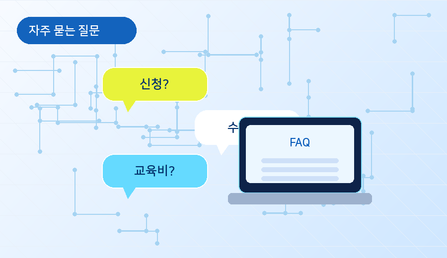

FAQ
자주 묻는 질문
문의하기 전에 대부분의 궁금증을 바로 해결할 수 있도록 신청 페이지 가까이에 배치합니다.
Question
자주 묻는 질문
사용자가 자주 헷갈리는 내용을 접이식으로 정리했습니다.

부트캠프는 누구나 신청할 수 있나요?
과정별 대상이 다를 수 있으므로 교육카드에서 학과와 신청 조건을 먼저 확인하도록 안내합니다.
신청 후 취소할 수 있나요?
신청 기간 안에는 취소 가능 여부를 안내하고, 마감 이후에는 담당자 문의가 필요하다는 문구를 표시합니다.
수료증이 나오나요?
출석률과 과제 제출 등 과정별 수료 기준을 충족하면 수료 안내를 받을 수 있도록 구성합니다.
교육비가 있나요?
교육비, 준비물, 개인 부담 비용 여부를 신청 전에 확인할 수 있도록 체크리스트로 제공합니다.
교육을 들으면 취업에 도움이 되나요?
각 교육과정 아래에 연결 직무와 채용정보를 함께 보여주어 교육과 진로의 관계를 설명합니다.